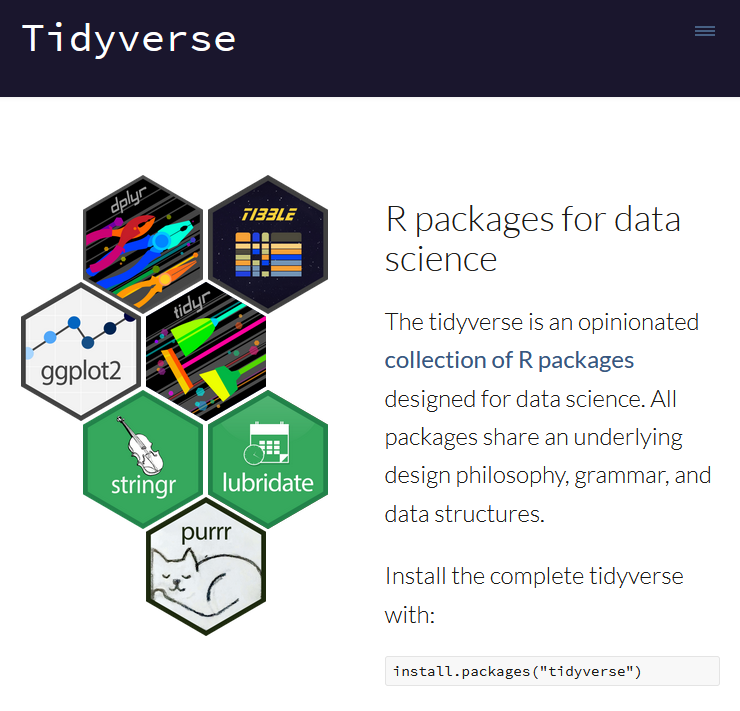
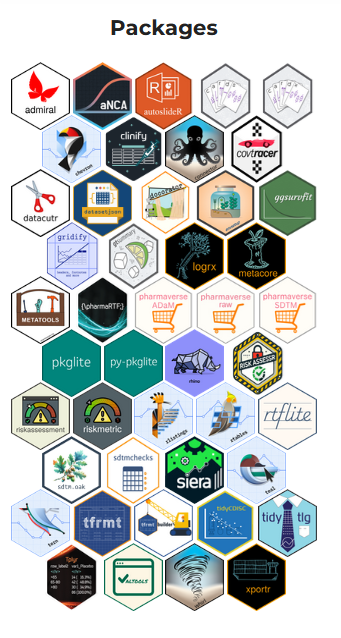

29 January, 2026
Day 1: basic syntax, classes, objects, functions
Day 2: base package, tidy programming & tidyverse
Day 3: RMarkdown / Quarto
Day 4: Git & RStudio
Assignment
Object types
Functions
Packages
Consider this story:
Little bunny Foo Foo
Went hopping through the forest
Scooping up the field mice
And bopping them on the head
Translate into code:
%>% is the pipe operator (part of magrittr package), passing the results of the previous operation to the next:
The idea is to do this:
Instead of this:
R 4.1.0 introduced a native pipe operator |>
The essence of the behavior between %>% and |> is the same
But there are some differences
%>% is more complicated, but also more flexible
Details about the differences are summarized here:


tibbles are very similar to data.frames
output of tidyverse functions is usually a tibble (if performed on a data.frame)
unlike data frames, tibbles don’t show the entire dataset when you print it:
# load data
penguins <- datasets::penguins
# object class is data.frame
class(penguins)
# print the data
penguins
# convert to tibble
penguins <- tibble::as_tibble(penguins)
# object class is tibble now
class(penguins)
# print the data
penguins
# we can also do the same with dataframes by uisnd head()
head(as.data.frame(penguins))tibbles cannot access a column when you provide a partial name of the column, but data frames can
when you access only one column of a tibble, it will keep the tibble structure. But when you access one column of a data frame, it will become a vector
when assigning a new column to a tibble, the input will not be recycled, which means you have to provide an input of the same length of the other columns
but a data frame will recycle the input
tibbles don’t support support arithmetic operations on all columns well, the result will be converted into a data frame without any notice
Note
Take home message: tibbles and data.frames both work well in most cases, just be aware what object class you are working with.
different import functions (and even packages) for different data formats
importing csv files:
importing excel files:
importing other common data files :
export functions are usually just called write_ instead of read_ (check the documentations), but you have to provide the object to be exported and the path in separate arguments, e.g.:
export to excel is not straightforward, better to export csv and then open using excel if needed
rbind()
stacks rows (adds observations)
data frames must have same columns (names & types)
example: rbind(data1, data2)
cbind()
binds columns (adds variables)
same number of rows required
example: cbind(data1, new_col)
merge()
join by keys
example: merge(data1, data2, by = "id")
dplyr::bind_rows()
tidyverse version of rbind()
handles mismatched columns (fills with NA)
example: bind_rows(data1, data2)
dplyr::bind_cols()
tidyverse version of cbind()
row counts must match
example: bind_cols(data1, data2)
merging (all from dplyr)
left_join() & right_join()inner_join() & full_join()# load an example dataset from the package datasets (long format)
data_long <- datasets::Indometh
# long to wide
data_wide <- reshape(data_long, # data in the long format
idvar = "Subject", # names of one or more variables in long format that
# identify multiple records from the same group/individual
timevar = "time", # the variable in long format that differentiates multiple
# records from the same group or individual
v.names = "conc", # names of variables in the long format that correspond
# to multiple variables in the wide format
direction = "wide") # direction of reshaping
# wide to long
data_long <- reshape(data_wide, # data in the wide format
idvar = "Subject", # names of one or more variables in long format that
# identify multiple records from the same group/individual
v.names = "conc", # names of variables in the long format that correspond
# to multiple variables in the wide format
direction = "long") # direction of reshaping# load an example dataset from the package datasets (long format)
data_long <- datasets::Indometh
# long to wide
data_wide <- data_long %>%
pivot_wider(
names_from = time, # which column (or columns) to get the name of the output
values_from = conc, # which column (or columns) to get the cell values from
names_prefix = "conc.") # string added to the start of every variable name
# wide to long
data_long <- data_wide %>%
pivot_longer(
cols = starts_with("conc"), # columns to pivot into longer format (selection example, use only one)
cols = conc.0.25:conc.8, # columns to pivot into longer format (selection example, use only one)
names_to = "time", # a character vector specifying the new column or columns to create
# from the information stored in the column names of data specified by cols
names_prefix = "conc.", # a regular expression used to remove matching text from the start of each
# variable name
values_to = "conc") # a string specifying the name of the column to create from the data stored
# in cell valuesbase R
data[rows, cols]
example: data[data$age > 30, c("name", "age")]
get row indices: data[which(data$age > 30), ]
tidy
rows: data %>% filter(age > 30)
columns: select(data, name, age)
in a pipe: data %>% select(name, age) %>% filter(age > 30)
helper functions: starts_with("string"), contains("string")
or use regular expressions (regex):
rename by name:
names(data)[names(data) == "old"] <- "new"rename by position:
names(data)[2] <- "new_name"with colnames():
colnames(data)[colnames(data) == "old"] <- "new"rename(): data %>% rename(new = old)
rename multiple variables at once (rename_with() expects a function, indicated by ~):
data %>% rename_with(~ paste0("var", seq_along(.x)))
paste0() # concatenate vectors after converting to character
seq_along(.x) # generate a sequence along with the length of .x
.x placeholder for the columns of the dataframe; if your dataframe has columns a, b, c, then .x = c("a","b","c")
If we don’t use .x instead of seq_along(.x), we will concatenate var and variable names from the data instead of var and a sequence number
data %>% rename_with(~ gsub("-", "_", .x))
gsub() renames the pattern provided in the first argument, by the argument provided in the secondbase R:
add new column:
data$new_var <- data$x * 2conditional logic:
data$group <- ifelse(data$age > 30, "old", "young")tidy:
mutate():
data %>% mutate(new_var = x * 2)conditional:
data %>% mutate(group = if_else(age > 30, "old", "young"))multiple variables at once:
data %>% mutate(across(starts_with("x"), log))Linear regression: lm()
lm(y ~ x1 + x2, data = data)Some generalized linear models (logistic, poisson): glm()
glm(y ~ x1 + x2, data = data, family = binomial)
glm(y ~ x1 + x2, data = data, family = poisson)
lme4::lmer() lme4::glmer()
lme4::lmer(y ~ x1 + x2 + (1 | group), data = data)Survival models:
Cox-model:
survival::coxph(Surv(time, event) ~ x1 + x2, data = data)Kaplen-Meier:
survival::survfit(Surv(time, event) ~ 1, data = data)Creating plots and tables
Reporting with RMarkdown/Quarto
https://allisonhorst.com/
Introduction to R - Day 2